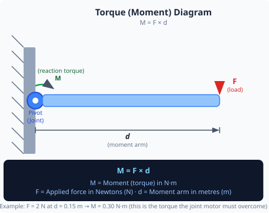
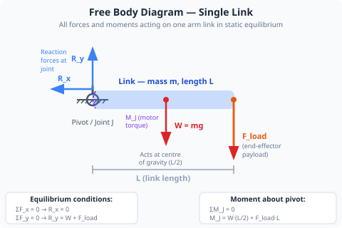
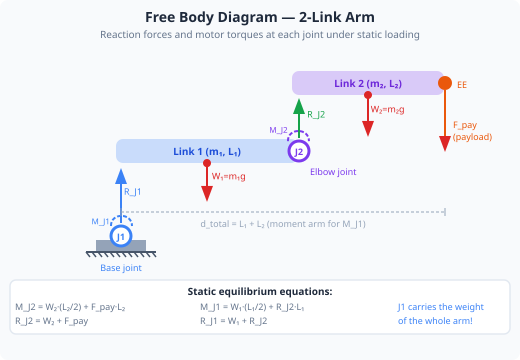
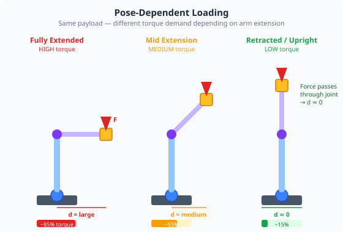

Duration: 3–4 hours · Prerequisites: Modules 1, 2, 3

When the robot arm is stationary (in static equilibrium), the forces and moments acting on it are balanced. Understanding these forces tells us how much torque each joint servo must produce just to hold the arm in position — before any load is picked up or any motion occurs.
Consider the arm held horizontally. The weight of Link 3, Link 4, Link 5 and Link 6 acts at their centres of mass, which are far from the shoulder joint. The moment arm (distance from shoulder to the centre of mass) is large, so even a small mass creates a significant moment at the shoulder. The elbow joint supports only the links above it, so its moment is smaller — but still significant.


A free body diagram (FBD) is a sketch that isolates a single component and shows all the forces and moments acting on it. It is the standard engineering tool for setting up equilibrium equations.
For a robot arm joint, the FBD shows:
For static equilibrium: sum of all forces = 0 and sum of all moments = 0.
In the Joint Control tab, read the load (%) value from each of the 6 joint status cards. This is the live current load as a percentage of stall torque. Record all 6 values in the table below for each pose: (a) arm fully horizontal, (b) arm at 45° elevation, (c) arm pointing straight up.
Position the arm so it is roughly horizontal — Joint 2 (shoulder) extended out to the side, elbow and wrist straight. Record the load readings for joints 1, 2, and 3.
Now move the arm to a vertical pose — all joints pointing upward. Record the load readings again. Compare them to the horizontal pose.
Move Joint 2 to 45° from horizontal. Record the load. You should see it is between the horizontal and vertical values. Note which joint has the highest load in each pose.
If you have a small object (under 100 g), hold it at the end effector while the arm is horizontal and record the change in load. Carefully remove the object. Note: keep the workspace clear and handle objects carefully.
Enable the Joint Traces overlay in the 3D Visualisation tab, then pop out the 3D view into a separate window (Pop Out button). Arrange the 3D window and the Joint Control tab side by side. Move the arm between the three poses and observe how the load % values in Joint Control change as the arm configuration changes on screen — this makes the moment-arm relationship directly visible.

| Pose | Joint 1 Load | Joint 2 Load | Joint 3 Load | Joint 4 Load | Joint 5 Load | Joint 6 Load |
|---|---|---|---|---|---|---|
Every servo in the arm has a rated maximum torque. If a pose or payload exceeds that limit, the servo will stall, overheat, and ultimately fail. By calculating the moments in advance, an engineer can determine whether a design is safe before anything is built — or set software limits on arm extension and payload to prevent overloading the hardware.
The load readings you observed in the app are the real-time expression of these calculations. Experienced operators learn to read load trends: a joint that is consistently near its limit in a particular pose is a servo that will fail prematurely. Redesigning the path to avoid that pose extends hardware life dramatically.
1. A 0.3 kg link has its centre of mass 0.20 m from the joint it hangs from. What moment does it create at that joint? (g = 9.81 m/s²)
2. Which arm pose creates the greatest moment (bending load) at the shoulder joint?
3. The load reading on a servo in the app is a proxy for which physical quantity?